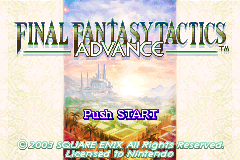

Final Fantasy Tactics Advance (USA)
Flash 512K
Cartridge Identity
- Game Code
AFXE(FamilyAFX)- Header Title
FFTA_USVER.- Maker / Revision
01/ rev0- ROM Size
- 16.0 MiB (16,777,216 B)
- Save Media
Flash 512K- SHA-256
43fc8204c6dceee58828aebc7af0c72eb807e99f35ad641c8bb0a4fa8b6edc19- Engine / SDK Group
comm-002(145 families)
Screenshots

ROM Assets, Compression & Audio
- BIOS Compression
- LZ77 (
0x10): 781 streams · RLE (0x30): 0 streams - ROM Pointer Tables
- 91 tables (0 pointing to validated compressed streams)
- SDK Backup Tags
FLASH512_V130
Hardware MMIO Subsystems
ppu_display0x80006d0,0x8000788,0x800216c,0x800337c,0x813eda0save_bus_sram_flash0x81418c0,0x8141b14
Regional Variants & Revisions (Family AFX)
- Final Fantasy Tactics Advance (Europe) (En,Fr,De,Es,It) (
AFXP, 16 MiB) - Final Fantasy Tactics Advance (Europe) (En,Fr,De,Es,It) (Virtual Console) (
AFXP, 16 MiB) - Final Fantasy Tactics Advance (Japan) (
AFXJ, 16 MiB) - Final Fantasy Tactics Advance (Japan) (Virtual Console) (
AFXJ, 16 MiB) - Final Fantasy Tactics Advance (USA) (Virtual Console) (
AFXE, 16 MiB)